Tech
Beats Studio Pro headphones
"Quiet on demand: active noise cancelling for work and travel, with up to 40 hours of battery."
Why we picked it
We chose them for home offices and commutes where focus matters.
- Active noise cancelling, plus Transparency mode to hear the room
- Up to 40 hours of battery; a 10-minute charge gives up to 4 hours
- One-touch pairing with Apple and Android
- Size
- 7 in by 7.1 in, 3.1 in deep; 9.2 oz
- Connects
- Bluetooth, USB-C for lossless audio, or the 3.5 mm cable
Skip them if you want small earbuds for workouts.
Before you buy
- Fit: over-ear, 9.2 oz, so they are for the desk and the commute, not the gym.
- Connections: Bluetooth, USB-C for lossless audio, or the 3.5 mm cable, so they work wired when a battery dies.
- Battery: up to 40 hours, and a 10-minute charge gives about 4 hours.
Fits: A quiet home office or open-plan desk, with Transparency mode for when someone talks to you.
Not for: Workouts or running; small earbuds suit that better.
Goes with
- Hatch Restore 3 sunrise alarm clock: the wind-down after the headphones come off
- Fenmzee bedside lamp, dimmable touch with USB: a warm lamp for the quiet desk
Full guide: read it
As an Amazon Associate, BuyRight Notes earns from qualifying purchases. We pick products from published specs and our own notes, not paid placements.
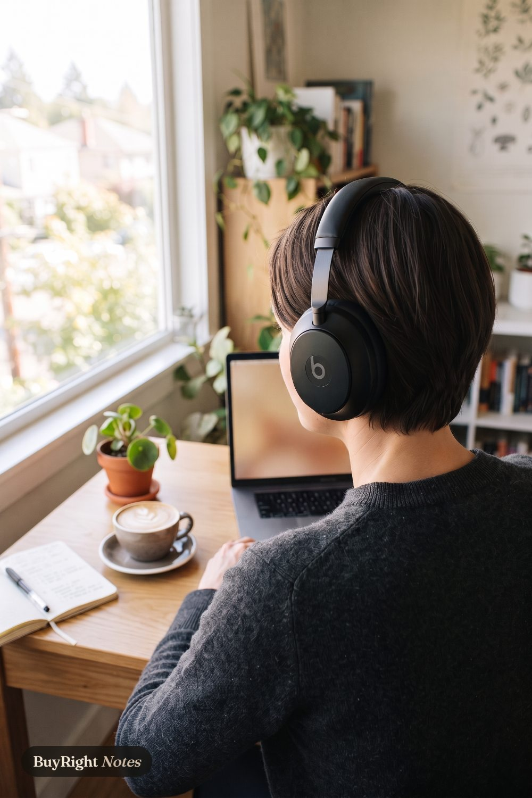
Tech
- Beats Studio Pro headphonesQuiet on demand: active noise cancelling for work and travel, with up to 40 hours of battery.
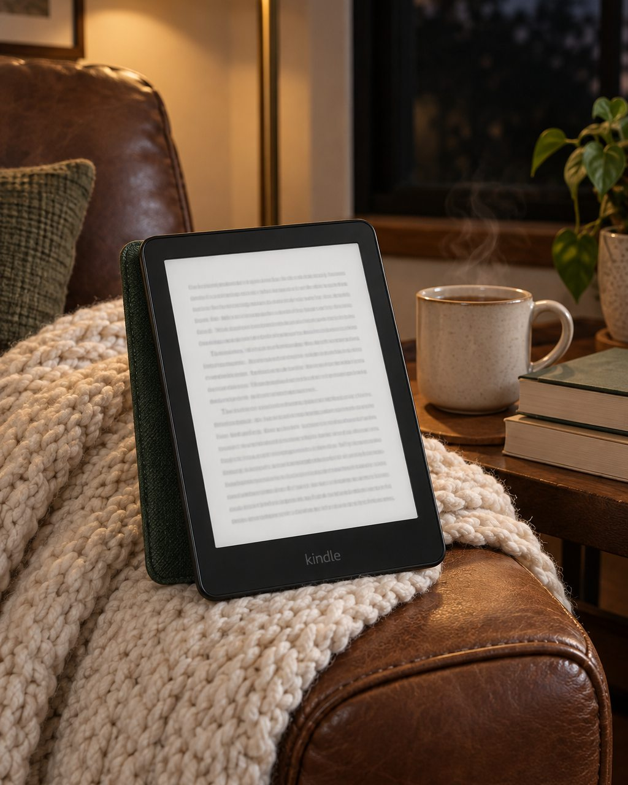
Kindle Paperwhite fabric cover (2024)The official fabric cover for the 2024 Paperwhite and Colorsoft: wakes and sleeps the Kindle, folds back for one-handed reading.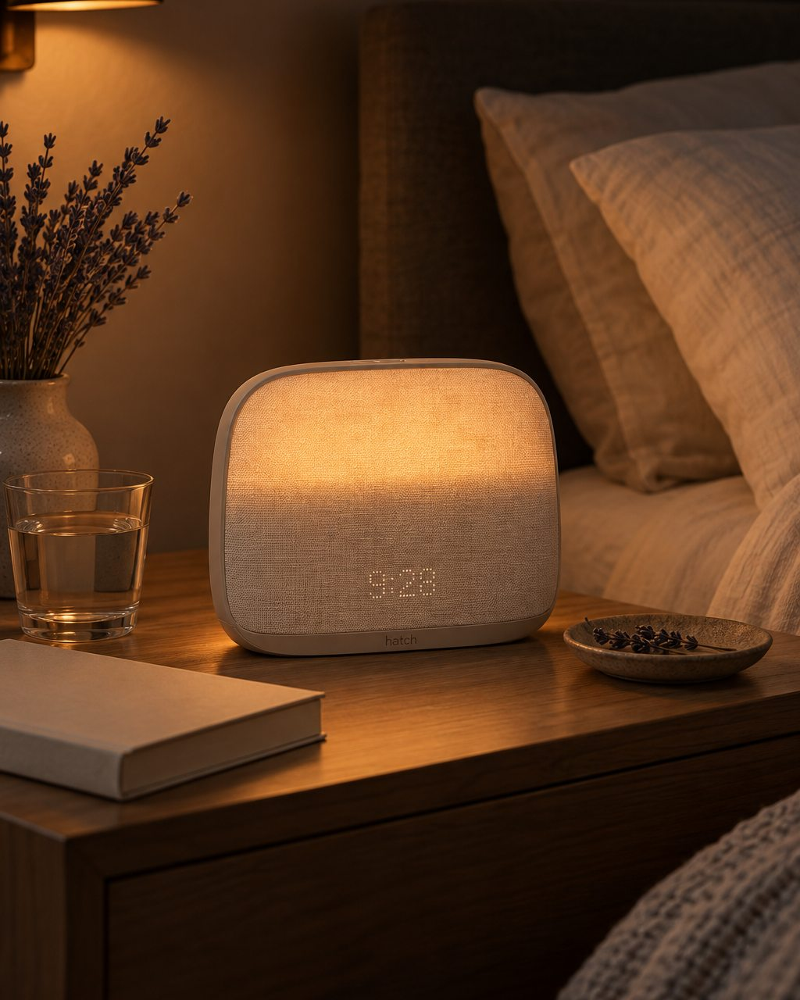
Hatch Restore 3 sunrise alarm clockA bedside routine in one device: sound machine, reading light, dimmable clock and a sunrise alarm that wakes you gently.
Deal watch
 Breville Bambino, 54 mm espressoCompact espresso for a small kitchen: ready in about 3 seconds, and its 54 mm accessories are easy to find.
Breville Bambino, 54 mm espressoCompact espresso for a small kitchen: ready in about 3 seconds, and its 54 mm accessories are easy to find.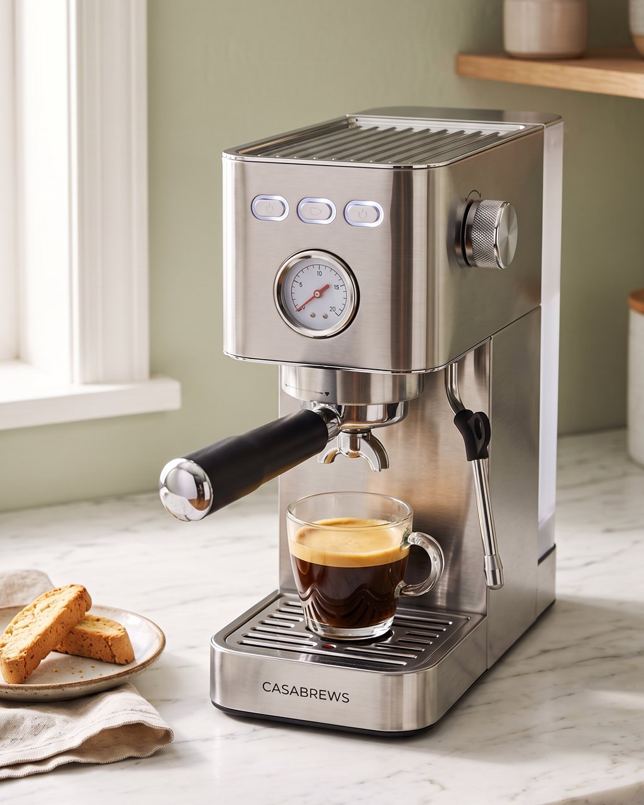
CASABREWS espresso machine, 51 mmA first espresso machine at a starter price, with one catch: it takes 51 mm baskets, and most accessory kits do not. Keurig K-Classic, 3 cup sizesPod coffee with nothing to measure: drop in a K-Cup, press one of three buttons, and pour in about a minute.
Keurig K-Classic, 3 cup sizesPod coffee with nothing to measure: drop in a K-Cup, press one of three buttons, and pour in about a minute. BISSELL Little Green Mini, spot cleanerA small spot cleaner for spills and pet accidents: it sprays, scrubs and lifts the mess from couches, rugs and car seats.
BISSELL Little Green Mini, spot cleanerA small spot cleaner for spills and pet accidents: it sprays, scrubs and lifts the mess from couches, rugs and car seats. Ninja Professional Blender, 72 ozEnough power to crush ice for frozen drinks, and a pitcher big enough to make smoothies for the whole family at once.
Ninja Professional Blender, 72 ozEnough power to crush ice for frozen drinks, and a pitcher big enough to make smoothies for the whole family at once.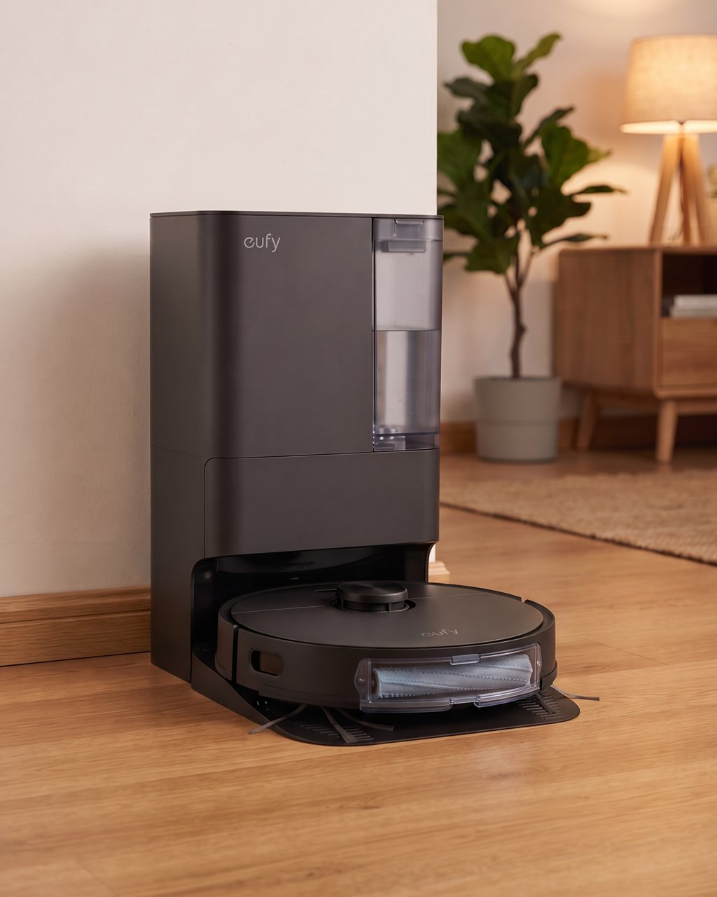
eufy E25 robot vacuum and mopVacuums and mops in one run, then empties, washes its mop and refills itself at the dock.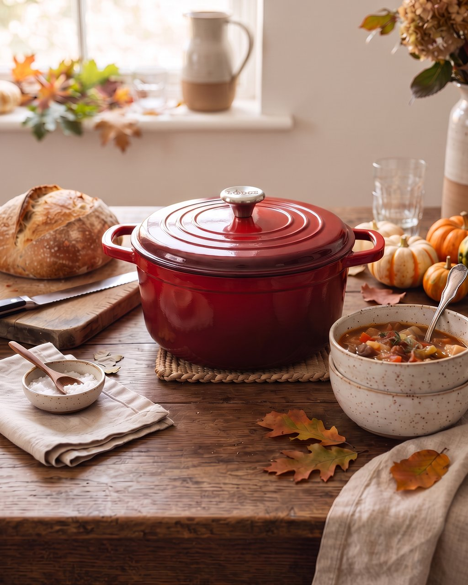
Lodge enameled Dutch oven, 6 qtOne heavy pot for crusty no-knead bread, soups and stews: it holds heat evenly and is oven-safe to 500°F.- Beats Studio Pro headphonesQuiet on demand: active noise cancelling for work and travel, with up to 40 hours of battery.
 Cosori TurboBlaze air fryer, 6 qtA 6-quart air fryer for family dinners and party trays: 9 functions, 90 to 450°F, and a quieter fan than most.
Cosori TurboBlaze air fryer, 6 qtA 6-quart air fryer for family dinners and party trays: 9 functions, 90 to 450°F, and a quieter fan than most. Summer Fridays Lip Butter BalmThe overnight lip mask that doubles as a daytime balm: shea and murumuru butters, vegan waxes, subtle vanilla, no tackiness.
Summer Fridays Lip Butter BalmThe overnight lip mask that doubles as a daytime balm: shea and murumuru butters, vegan waxes, subtle vanilla, no tackiness.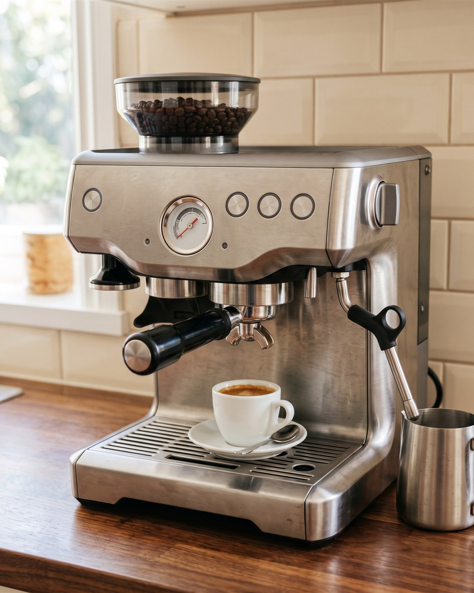
Breville Barista Express, 54 mm with built-in grinderThe whole espresso bar in one 16-inch machine: a built-in burr grinder that doses straight into the 54 mm portafilter, a steam wand for milk, and the rest in the box.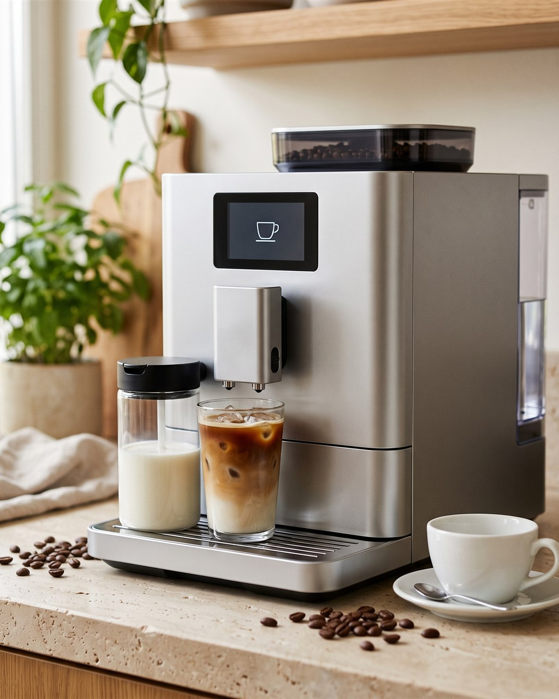
De'Longhi Magnifica Duo, one-touch hot and icedBean-to-cup at one touch, hot or iced: it grinds, brews and froths milk on its own, with 20 preset drinks and two milk carafes, one for hot foam and one for cold.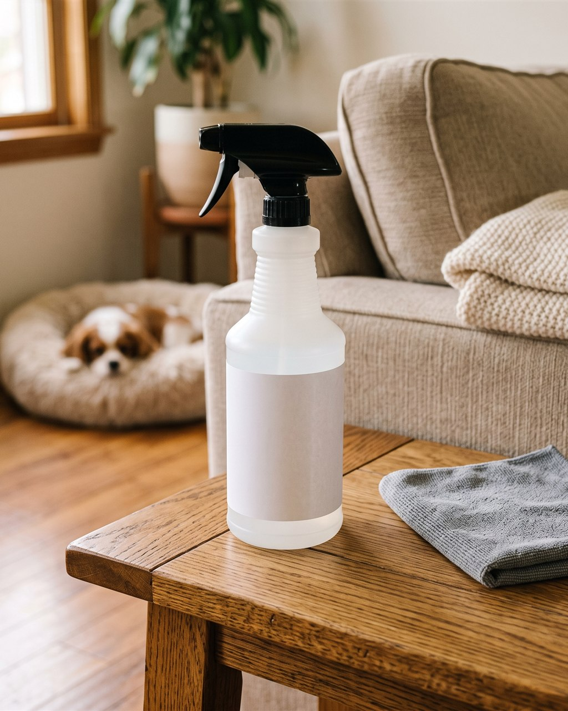
Rocco & Roxie enzyme stain and odor spray, 32 ozThe bottle to reach for before the spot cleaner: an enzyme spray that eats the source of pet urine, vomit and other organic smells instead of covering them. TempPro TP19H instant-read thermometerThe one-second answer to "is it done?": a folding probe thermometer that reads in a second, turns on when you open it, and rinses under the tap.
TempPro TP19H instant-read thermometerThe one-second answer to "is it done?": a folding probe thermometer that reads in a second, turns on when you open it, and rinses under the tap.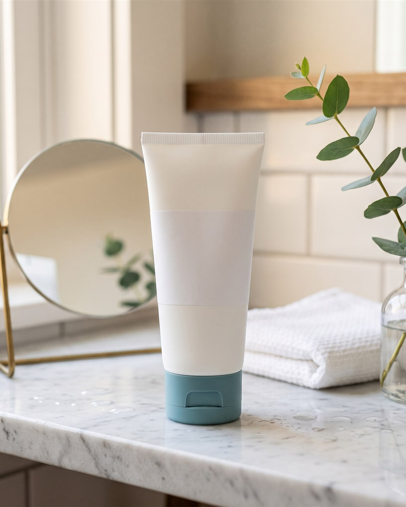
CeraVe AM moisturizer with SPF 30, 3 ozThe morning step most routines skip: a fragrance-free daily moisturizer with SPF 30 built in, so sunscreen happens without a separate bottle.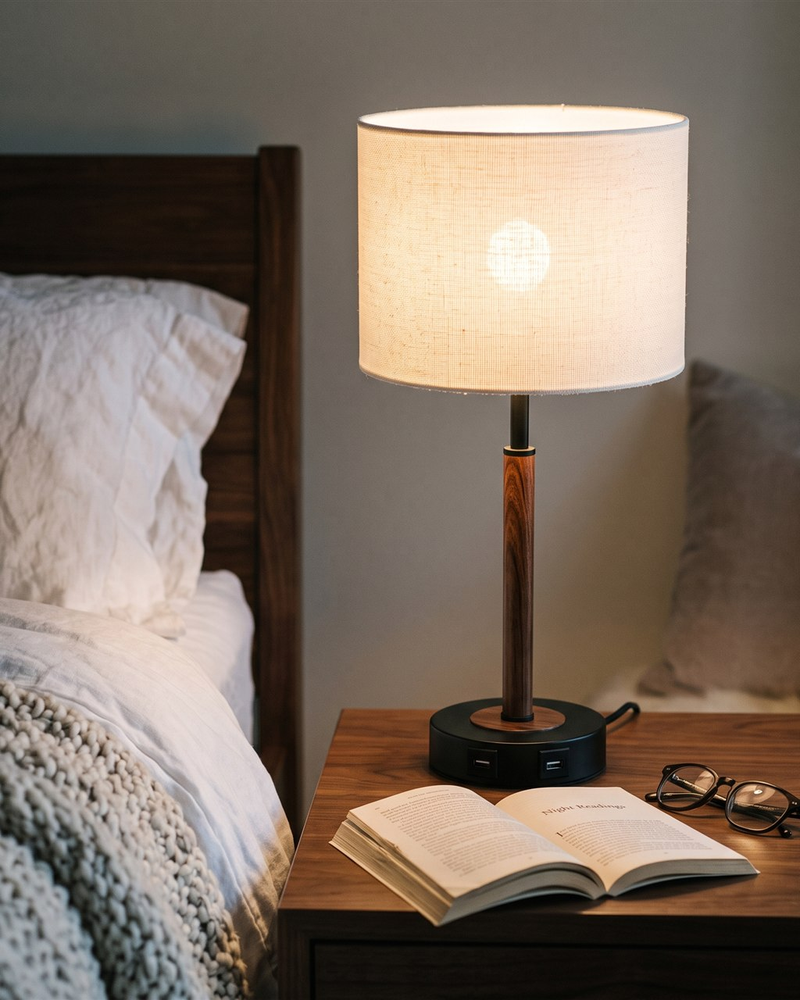
Fenmzee bedside lamp, dimmable touch with USBA small warm reading lamp for the nightstand: three brightness levels by touch, a bulb in the box, and USB-A, USB-C and an outlet on the base to charge the phone.